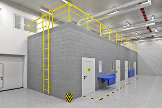
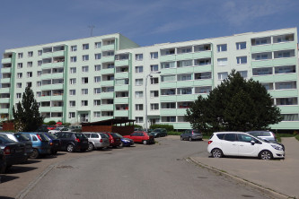
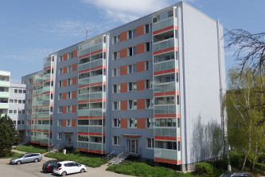
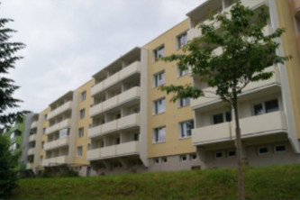
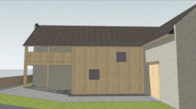
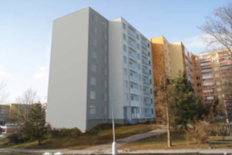
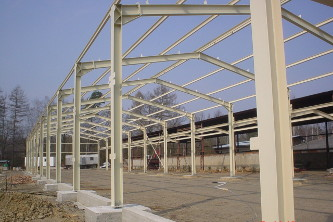
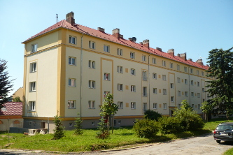
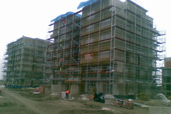
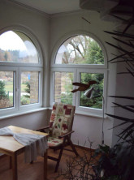

Reference

Vestavba testovací komory, IGW, Brno /2015/
- projekt pro provedení stavby

Rekonstrukce RD, Chrlice /2014-2015/
- realizace stavby
- dopracování projektové dokumentace

BD, ul. Rybízová, Brno /2014/
- projekt pro stavební povolení
- technický dozor investora

Novostavba RD, Vyškov /2014/
- projekt pro stavební povolení a realizaci
- architektonický návrh - Marek Bartoš

BD, ul. Jabloňová, Brno /2013/
- projekt pro stavební povolení
- technický dozor investora

Areál volného času, Havířov /2013/
- studie využitelnosti
- příprava podkladů pro výběrové řízení

BD, ul. Valouškova, Brno /2012/
- návrh zateplení a výměny lodžií
- technický dozor

BD, ul. Šebelová, Bílovice /2012/
- projekt pro stavební povolení a realizaci
- technický dozor

Přístavba a nástavba RD, Ježkovice /2012/
- studie
- projekt pro stavební povolení

BD, ul. Dunajská, Brno /2012/
- inženýrská činnost

BD, Třebíč /2011/
- technický dozor investora

BD, ul. Korejská, Brno-Žabovřesky /2011/
- projektová dokumentace
- technický dozor

BD, Vamberk /2011/
- technický dozor investora

BD, Mikuláškovo náměstí, Brno /2011/
- inženýrská činnost

Rekonstrukce nájezdových ramp v areálu RWE, Brno /2011/
- projekt pro realizaci stavby

BD, ul. Nádražní, Kuřim /2011/
- výběrové řízení
- technický dozor investora
- projektová dokumentace

BD, Mikuláškovo náměstí, Brno /2010/
- projekt pro stavební povolení

BD, ul. Jiráskova, Zbýšov /2010/
- projekt pro stavební povolení

BD, ul. Foltýnova, Brno /2010/
- projekt pro stavební povolení

Rekonstrukce střechy RD, ul. Tišnovská, Brno /2010/
- výběrové řízení
- technický dozor investora
- projektová dokumentace pro realizaci stavby

Novostavba stáje v Krásné Hoře /2009/
- projekt pro realizaci stavby

Zemní práce (HTU, stabilizace) Digital Park Bratislava /2009/
- řízení stavby pro Sedos a.s.

Komunikace a odstavné plochy McDonald's Prešov /2009/
- řízení stavby pro Sedos a.s.

BD, ul. Mášova, Brno /2009/
- technický dozor investora

BD, Cementářské sídliště 1311-1314, Hranice /2009/
- výběrové řízení
- autorský dozor
- projekt zateplení, vytápění, vodovodu a kanalizace

BD Zelené město, zhotovitel f. SYNER /2008/
- projektová dokumentace
- technický dozor investora
- výběrové řízení

Zemní práce (HTU, stabilizace) KIKA Olomouc /2008/
- řízení stavby pro Sedos a.s.
Rekonstrukce kanceláří DanProjekt, Brno /2008/
- realizace stavby
Rekonstrukce bytu, ul. Pražská, Pelhřimov /2008/
- realizace stavby

Novostavba RD, Hostěnice /2007/
- projektová dokumentace
- technický dozor investora
- výběrové řízení

BD, ul. Jundrovská 14, Brno /2007/
- řízení stavby pro Moravská stavební a.s.

Zemní práce (HTU, stabilizace) Prologis park Ostrava /2007/
- řízení stavby pro Sedos a.s.

Přestavba rodinného domu, Nová Cerekev /2007/
- realizace stavby
Půdní vestavba v rodinném domě, Křižanov /2007/
- realizace stavby
- technický dozor investora
- projektová dokumentace pro stavební povolení

Kompletní přestavba rodinného domu, Křižanov /2005 - 2007/
- realizace stavby
- projektová dokumentace pro realizaci stavby
Přestavba bytu, ul. Kosíkova, Brno /2007/
- realizace stavby

Fasáda bytového domu, ul. Cihlářská, Brno /2006/
- realizace stavby

Dálnice D8, tunel Panenská, budovy v portálech tunelů /2006/
- řízení stavby
- stavební dozor
Novostavba rodinného domu, ul. Ambrožova, Brno-Kníničky /2006/
- realizace stavby

Rekonstrukce prodejny Meinl, ul. Kamínky, Brno /2005/
- realizace stavby